Importance Preferences - Random
Contents
Importance Preferences - Random¶
In this section we look for correlations between what respondents consider ‘Important’ categories of programming and examine which Media Outlets they use on a regular basis to obtain such programming.
Local News¶
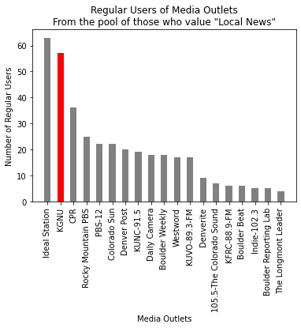
Cohort is defined those who rated "Local News" at least a 9 in Importance.
Cohort Size: 83
Within this Cohort, % "Regular User" Statistics:
Ideal Station: 75.9%
KGNU: 68.7%
CPR: 43.4%
Rocky Mountain PBS: 30.1%
PBS-12: 26.5%
Colorado Sun: 26.5%
Denver Post: 24.1%
KUNC-91.5: 22.9%
Daily Camera: 21.7%
Boulder Weekly: 21.7%
Westword: 20.5%
KUVO-89.3-FM: 20.5%
Denverite: 10.8%
105.5-The Colorado Sound: 8.4%
KFRC-88.9-FM: 7.2%
Boulder Beat: 7.2%
Indie-102.3: 6.0%
Boulder Reporting Lab: 6.0%
The Longmont Leader: 4.8%
Weather Reports¶
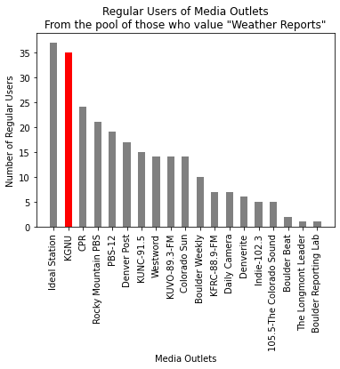
Cohort is defined those who rated "Weather Reports" at least a 9 in Importance.
Cohort Size: 59
Within this Cohort, % "Regular User" Statistics:
Ideal Station: 62.7%
KGNU: 59.3%
CPR: 40.7%
Rocky Mountain PBS: 35.6%
PBS-12: 32.2%
Denver Post: 28.8%
KUNC-91.5: 25.4%
Westword: 23.7%
KUVO-89.3-FM: 23.7%
Colorado Sun: 23.7%
Boulder Weekly: 16.9%
KFRC-88.9-FM: 11.9%
Daily Camera: 11.9%
Denverite: 10.2%
Indie-102.3: 8.5%
105.5-The Colorado Sound: 8.5%
Boulder Beat: 3.4%
The Longmont Leader: 1.7%
Boulder Reporting Lab: 1.7%
Traffic Reports¶
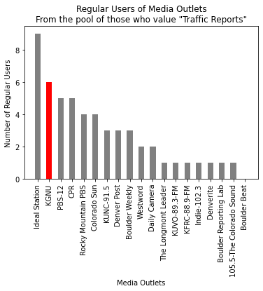
Cohort is defined those who rated "Traffic Reports" at least a 9 in Importance.
Cohort Size: 14
Within this Cohort, % "Regular User" Statistics:
Ideal Station: 64.3%
KGNU: 42.9%
PBS-12: 35.7%
CPR: 35.7%
Rocky Mountain PBS: 28.6%
Colorado Sun: 28.6%
KUNC-91.5: 21.4%
Denver Post: 21.4%
Boulder Weekly: 21.4%
Westword: 14.3%
Daily Camera: 14.3%
The Longmont Leader: 7.1%
KUVO-89.3-FM: 7.1%
KFRC-88.9-FM: 7.1%
Indie-102.3: 7.1%
Denverite: 7.1%
Boulder Reporting Lab: 7.1%
105.5-The Colorado Sound: 7.1%
Boulder Beat: 0.0%
Music Programming¶
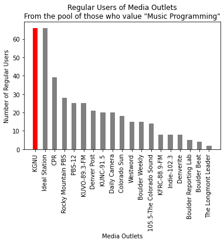
Cohort is defined those who rated "Music Programming" at least a 9 in Importance.
Cohort Size: 102
Within this Cohort, % "Regular User" Statistics:
KGNU: 64.7%
Ideal Station: 64.7%
CPR: 38.2%
Rocky Mountain PBS: 27.5%
PBS-12: 24.5%
KUVO-89.3-FM: 24.5%
Denver Post: 20.6%
KUNC-91.5: 19.6%
Daily Camera: 19.6%
Colorado Sun: 17.6%
Westword: 14.7%
Boulder Weekly: 14.7%
105.5-The Colorado Sound: 13.7%
KFRC-88.9-FM: 7.8%
Indie-102.3: 7.8%
Denverite: 7.8%
Boulder Reporting Lab: 4.9%
Boulder Beat: 3.9%
The Longmont Leader: 2.0%
National News¶
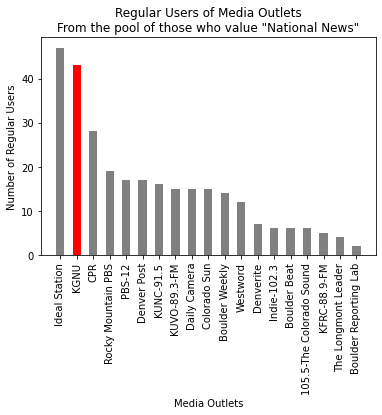
Cohort is defined those who rated "National News" at least a 9 in Importance.
Cohort Size: 66
Within this Cohort, % "Regular User" Statistics:
Ideal Station: 71.2%
KGNU: 65.2%
CPR: 42.4%
Rocky Mountain PBS: 28.8%
PBS-12: 25.8%
Denver Post: 25.8%
KUNC-91.5: 24.2%
KUVO-89.3-FM: 22.7%
Daily Camera: 22.7%
Colorado Sun: 22.7%
Boulder Weekly: 21.2%
Westword: 18.2%
Denverite: 10.6%
Indie-102.3: 9.1%
Boulder Beat: 9.1%
105.5-The Colorado Sound: 9.1%
KFRC-88.9-FM: 7.6%
The Longmont Leader: 6.1%
Boulder Reporting Lab: 3.0%
International News¶
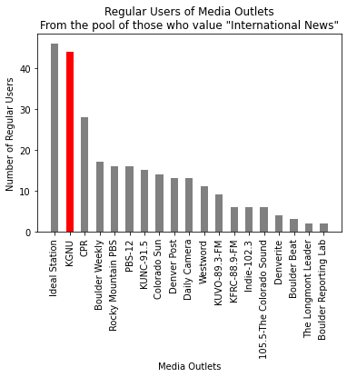
Cohort is defined those who rated "International News" at least a 9 in Importance.
Cohort Size: 63
Within this Cohort, % "Regular User" Statistics:
Ideal Station: 73.0%
KGNU: 69.8%
CPR: 44.4%
Boulder Weekly: 27.0%
Rocky Mountain PBS: 25.4%
PBS-12: 25.4%
KUNC-91.5: 23.8%
Colorado Sun: 22.2%
Denver Post: 20.6%
Daily Camera: 20.6%
Westword: 17.5%
KUVO-89.3-FM: 14.3%
KFRC-88.9-FM: 9.5%
Indie-102.3: 9.5%
105.5-The Colorado Sound: 9.5%
Denverite: 6.3%
Boulder Beat: 4.8%
The Longmont Leader: 3.2%
Boulder Reporting Lab: 3.2%
Breaking News Bulletins¶
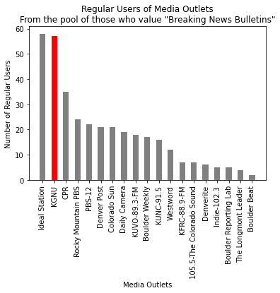
Cohort is defined those who rated "Breaking News Bulletins" at least a 9 in Importance.
Cohort Size: 87
Within this Cohort, % "Regular User" Statistics:
Ideal Station: 66.7%
KGNU: 65.5%
CPR: 40.2%
Rocky Mountain PBS: 27.6%
PBS-12: 25.3%
Denver Post: 24.1%
Colorado Sun: 24.1%
Daily Camera: 21.8%
KUVO-89.3-FM: 20.7%
Boulder Weekly: 19.5%
KUNC-91.5: 18.4%
Westword: 13.8%
KFRC-88.9-FM: 8.0%
105.5-The Colorado Sound: 8.0%
Denverite: 6.9%
Indie-102.3: 5.7%
Boulder Reporting Lab: 5.7%
The Longmont Leader: 4.6%
Boulder Beat: 2.3%
Community Events¶
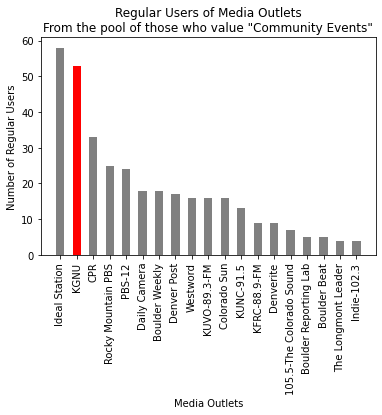
Cohort is defined those who rated "Community Events" at least a 9 in Importance.
Cohort Size: 75
Within this Cohort, % "Regular User" Statistics:
Ideal Station: 77.3%
KGNU: 70.7%
CPR: 44.0%
Rocky Mountain PBS: 33.3%
PBS-12: 32.0%
Daily Camera: 24.0%
Boulder Weekly: 24.0%
Denver Post: 22.7%
Westword: 21.3%
KUVO-89.3-FM: 21.3%
Colorado Sun: 21.3%
KUNC-91.5: 17.3%
KFRC-88.9-FM: 12.0%
Denverite: 12.0%
105.5-The Colorado Sound: 9.3%
Boulder Reporting Lab: 6.7%
Boulder Beat: 6.7%
The Longmont Leader: 5.3%
Indie-102.3: 5.3%
Local Government Coverage¶
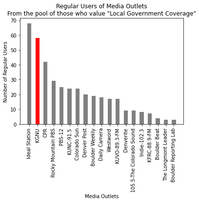
Cohort is defined those who rated "Local Government Coverage" at least a 9 in Importance.
Cohort Size: 93
Within this Cohort, % "Regular User" Statistics:
Ideal Station: 73.1%
KGNU: 62.4%
CPR: 45.2%
Rocky Mountain PBS: 31.2%
PBS-12: 26.9%
KUNC-91.5: 25.8%
Colorado Sun: 25.8%
Denver Post: 21.5%
Boulder Weekly: 20.4%
Daily Camera: 19.4%
Westword: 18.3%
KUVO-89.3-FM: 18.3%
Denverite: 9.7%
105.5-The Colorado Sound: 9.7%
Indie-102.3: 8.6%
KFRC-88.9-FM: 7.5%
Boulder Beat: 4.3%
The Longmont Leader: 3.2%
Boulder Reporting Lab: 3.2%
Political Analysis¶
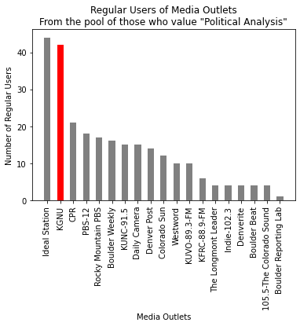
Cohort is defined those who rated "Political Analysis" at least a 9 in Importance.
Cohort Size: 59
Within this Cohort, % "Regular User" Statistics:
Ideal Station: 74.6%
KGNU: 71.2%
CPR: 35.6%
PBS-12: 30.5%
Rocky Mountain PBS: 28.8%
Boulder Weekly: 27.1%
KUNC-91.5: 25.4%
Daily Camera: 25.4%
Denver Post: 23.7%
Colorado Sun: 20.3%
Westword: 16.9%
KUVO-89.3-FM: 16.9%
KFRC-88.9-FM: 10.2%
The Longmont Leader: 6.8%
Indie-102.3: 6.8%
Denverite: 6.8%
Boulder Beat: 6.8%
105.5-The Colorado Sound: 6.8%
Boulder Reporting Lab: 1.7%
Local Public Affairs¶
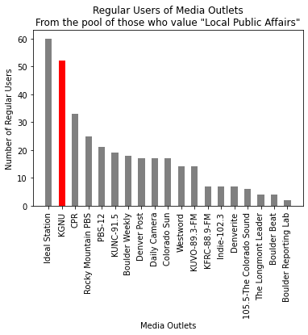
Cohort is defined those who rated "Local Public Affairs" at least a 9 in Importance.
Cohort Size: 76
Within this Cohort, % "Regular User" Statistics:
Ideal Station: 78.9%
KGNU: 68.4%
CPR: 43.4%
Rocky Mountain PBS: 32.9%
PBS-12: 27.6%
KUNC-91.5: 25.0%
Boulder Weekly: 23.7%
Denver Post: 22.4%
Daily Camera: 22.4%
Colorado Sun: 22.4%
Westword: 18.4%
KUVO-89.3-FM: 18.4%
KFRC-88.9-FM: 9.2%
Indie-102.3: 9.2%
Denverite: 9.2%
105.5-The Colorado Sound: 7.9%
The Longmont Leader: 5.3%
Boulder Beat: 5.3%
Boulder Reporting Lab: 2.6%